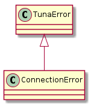
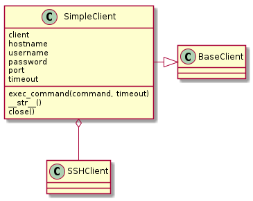

This is a wrapper around paramiko’s SSHClient that sets some flags to avoid host-key errors. The following are roughly equivalent.
SSHClient:
c = SSHClient()
c.set_missing_host_key_policy(paramiko.AutoAddPolicy())
c.load_system_host_keys()
c.connect(hostname='192.168.10.24', username='bob')
stdin, stdout, stderror = c.exec_command('ls')
SimpleClient:
c = SimpleClient(hostname='192.168.10.24', username='bob')
stdin, stdout, stderr = c.exec_command('ls')
This is some basic documentation for the SSHClient’s methods. Only some of them are re-implemented by the SimpleClient (because it’s simple), but the getattr is implemented so you can call the paramiko methods and they should work, but the errors will be different from the SimpleClient (they will be socket or paramiko errors) so you have to trap them.
paramiko.SSHClient() |
A high-level representation of a session with an SSH server. |
paramiko.SSHClient.close() |
Close this SSHClient and its underlying .Transport. |
paramiko.SSHClient.connect(hostname[, port, ...]) |
Connect to an SSH server and authenticate to it. |
paramiko.SSHClient.exec_command(command[, ...]) |
Execute a command on the SSH server. |
paramiko.SSHClient.get_host_keys() |
Get the local .HostKeys object. |
paramiko.SSHClient.get_transport() |
Return the underlying .Transport object for this SSH connection. |
paramiko.SSHClient.invoke_shell([term, ...]) |
Start an interactive shell session on the SSH server. |
paramiko.SSHClient.load_host_keys(filename) |
Load host keys from a local host-key file. |
paramiko.SSHClient.open_sftp() |
Open an SFTP session on the SSH server. |
paramiko.SSHClient.save_host_keys(filename) |
Save the host keys back to a file. |
paramiko.SSHClient.set_log_channel(name) |
Set the channel for logging. |
paramiko.SSHClient.set_missing_host_key_policy(policy) |
Set the policy to use when connecting to a server that doesn’t have a host key in either the system or local .HostKeys objects. |
Note
set_missing_host_key_policy and load_system_host_keys is called when the client is created, so you shouldn’t call it. The only extra methods you will likely ever use are invoke_shell and open_sftp. Otherwise you might as well use the SSHClient directly. The purpose of this module was to make it easier, not to re-do everything.
This is just a sub-class of the CameraobscuraError so anything that traps that will catch it.

ConnectionError |
SimpleClient |
|
SimpleClient.exec_command |
|
SimpleClient.client |
|
SimpleClient.__getattr__ |
|
SimpleClient.__str__ |
|
SimpleClient.close |

Warning
I’m using *args, **kwargs when connecting to the client so anything other than hostname, username and timeout will be passed in that way, but the string representation (__str__) expects the kwargs dictionary to have ‘port’ and ‘password’ arguments – to be safe use keyword arguments, not positional arguments when instantiating the SimpleClient.